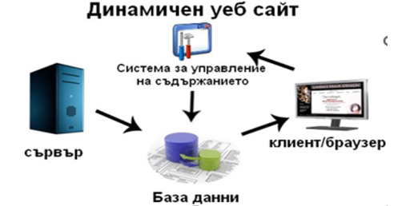

Статични
Статичните уебсайтове са със съдържание, което не може да бъде променено от потребителите. Те са изградени от html код, който определя структурата и съдържанието на страниците.
Динамични
Съдържанието на динамичните сайтове може да бъде променяно и от потребителите чрез създаване на коментари, добaвяне изображения и др. Те могат да бъдат създадени на базата на езиците PHP, ASP и JSP.
